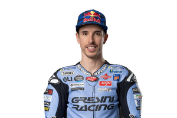

Información sobre su biografía y su historia como piloto
Alejandro Márquez Alentà
(Cervera,
Lérida, 23 de abril de 1996), más conocido como Álex Márquez, es un piloto de motociclismo español que compite en la «categoría reina» de MotoGP con el equipo Gresini Racing, donde obtuvo su primera victoria en el Gran Premio de España de 2025. Previamente compitió con los equipos Repsol Honda en 2020 y LCR Honda en 2021 y 2022. Ha ganado dos títulos del Campeonato del Mundo de Motociclismo (en Moto3 en 2014 y en Moto2 en 2019).

Resumen sobre sus datos
Fecha de nacimiento: 23 de abril de 1996
Lugar de nacimiento: Cervera, Lérida, España
Altura: 1,8 metros
Peso: 65 kgs
Moto: Ducati
Dorsal: 73
Escuderías a las que perteneció y los años que estuvo
Estrella Galicia (2012-2014)
EG 0,0 Marc VDS (2015-2019)
Repsol Honda (2020)
LCR HondaCastrol (2021-2022)
Gresini Racing MotoGP (2023-presente)
Palabras técnicas sobre la MotoGP
Chicane
En un circuito de carreras de vehículos motorizados, serie de curvas pronunciadas cuyo fin es reducir la velocidad
Pole
Posición de salida más ventajosa en automovilismo y motociclismo, donde el piloto más rápido de la clasificación sale primero en la carrera
Tacómetro
Instrumento que mide la velocidad de rotación de un eje en revoluciones por minuto (RPM), comúnmente utilizado en vehículos para indicar las revoluciones del motor
Control de tracción
Es un sistema de seguridad que previene que las ruedas de un vehículo pierdan agarre y patinen, especialmente durante la aceleración o en superficies resbaladizas
Dashboard
Herramienta de visualización de datos que presenta información clave y métricas importantes de forma gráfica y centralizada para facilitar el seguimiento y análisis del desempeño de un negocio o proceso